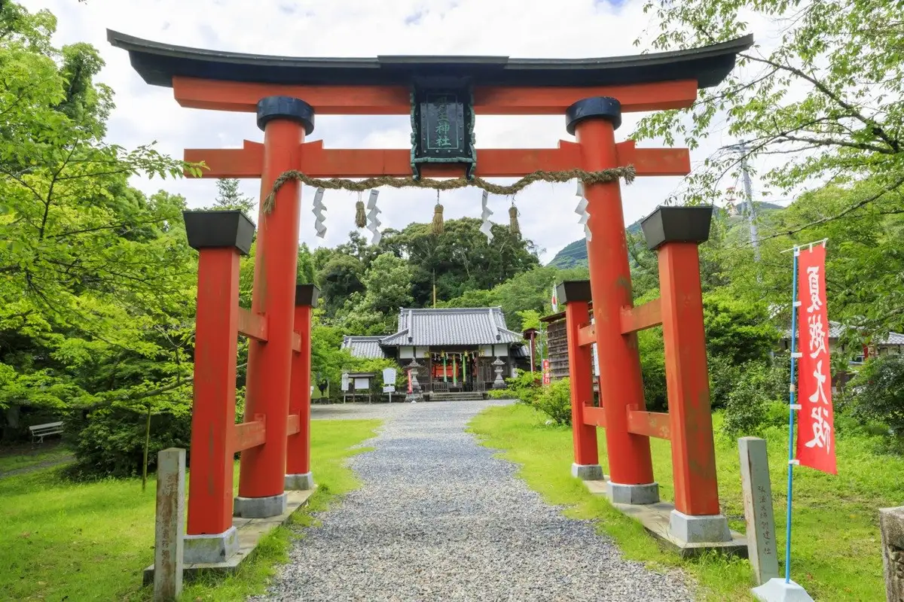
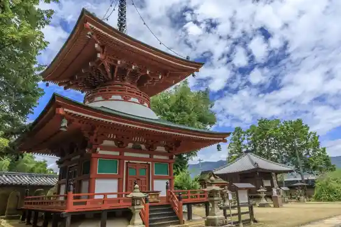
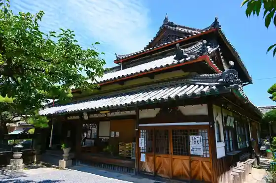

Japan / Wakayama / Kudoyama
Kudoyama
Kudoyama · Wakayama
Kudoyama
Highlighted on the Wakayama map.

Sights
Ji Mikoto In
Kudoyama, Wakayama · 0736-54-2214 · Official / source link

Roadside Station Kaki no Sato Kudoyama
Kudoyama, Wakayama · 0736-54-9966 · Official / source link
Sanada Iori
Kudoyama, Wakayama · 0736-54-2218 · Official / source link

Kudoyama Sanada Museum
Kudoyama, Wakayama · 0736-54-2727 · Official / source link
Ryuo Kei
Kudoyama, Wakayama · 0736-54-2019 · Official / source link
Kudoyama Mori no Dowa Kan
Kudoyama, Wakayama · 0736-54-2019 · Official / source link
Tanjo Kan Sho Fu Shrine
Kudoyama, Wakayama · 0736-54-2754 · Official / source link
Takano Sankei Michi Town Sekido Lookout
Kudoyama, Wakayama · 0736-54-2019 · Official / source link
Shori Tera Kami Yu En
Kudoyama, Wakayama · 0736-54-3484 · Official / source link
Matsuyama Tsunejiro Memorial Museum
Kudoyama, Wakayama · 0736-54-2414 · Official / source link
Kyu Kayano Ie (Oishi Jun Kyo Ama no Memorial Museum)
Kudoyama, Wakayama · 0736-54-2411 · Official / source link